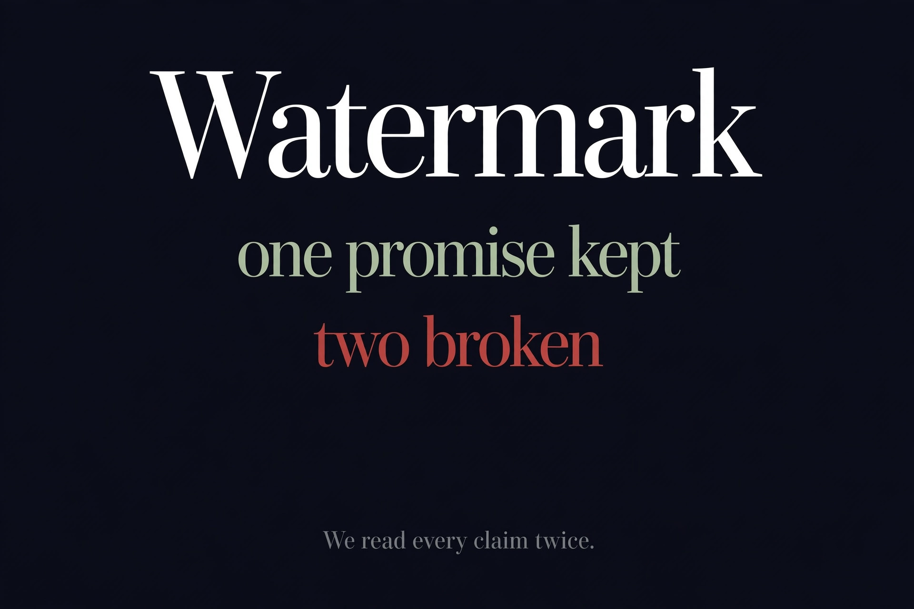

Free AI Video Generators Without Watermark, Claims Tested (2026)
Quick answer: We tested three "no watermark" claims in October 2026. Pixlr's promise is real — its official page guarantees watermark-free exports on a free account, but you must sign up and trial credits run out. HeyGen's "Without Watermark" title is misleading: its own page admits free exports carry watermarks. Kling AI never claimed it — free tier includes watermark.

| Pixlr | HeyGen | Kling AI | |
|---|---|---|---|
| No-watermark claim | True — official guarantee | Misleading — title vs body | Never claimed |
| Free exports watermarked? | No — clean HD MP4 | Yes — "discreet watermark" | Yes — official policy |
| The catch | Signup + finite trial credits | Watermark-free needs $29+/mo | Daily credits, login at generate |
| Free allowance | Trial credits (44–325/video) | 3 videos/mo, 1 min each | Daily free credits |
| Credit card for free | Not observed | No | Not at signup |
Pixlr: the promise that held
We went in expecting another debunk. Pixlr's video generator page states it twice, in plain language: "You can generate videos on a free account and there are no watermarks on any exports," and "Every generated video exports as a clean HD MP4 file with no watermarks." That's about as unambiguous as marketing copy gets — and it's the exception to the pattern we found in our talking-head test, where all three tools watermarked free output. The honest price: you must sign up (anonymous clicks hit a registration popup), and generation is credit-based — 44 to 325 credits per video depending on the model — with finite trial credits. Watermark-free, yes. Unlimited, no.
HeyGen: the title that lies
HeyGen's page is titled "Free AI Video Generator Without Watermark" — and ranks for exactly that query. Read past the title and the same page says: "Watermark included on the free plan, but upgrade anytime to remove it." The pricing table is even blunter: watermark removal on the free plan is marked ✗, available from $29/month up. One FAQ on the page even contradicts the rest, claiming videos "without a watermark" on the free plan — SEO copy fighting the product's own pricing table. Free means 3 watermarked videos a month, up to a minute each. The title is doing the selling; the fine print is doing the truth-telling.
Kling AI: never promised, honestly watermarked
Kling deserves credit for clarity. Its official feature page lists "Free tier includes watermark" right in the capability list, and its FAQ repeats: "free-tier exports generally include a watermark." No bait title, no contradictory FAQ — just a stated policy. The free tier runs on daily free credits (amount not published), up to 30 seconds per generation, with anonymous visitors stopped by a login wall at the generate button. Kling is what an honest free tier looks like: limited, watermarked, and upfront about both.
What "no watermark" actually costs in 2026
Across six video tools tested this week — three here, three in our no-signup test — exactly one offers watermark-free exports without paying: Pixlr, on a finite trial-credit budget. Everyone else either watermarks free output or locks clean exports behind $29+/month. The pattern is consistent enough to state plainly: in AI video generation, the watermark is the business model, and "without watermark" in a headline should be read as a claim to verify, not a fact. That's what the testing is for.
FAQ
Is there a free AI video generator without watermark?
Yes, one: Pixlr's official video generator page guarantees "no watermarks on any exports" on a free account. The catch is you must sign up, and generation costs trial credits (44–325 per video) that run out. HeyGen and Kling AI watermark their free exports.
Is Pixlr's free video generator really watermark-free?
According to Pixlr's own official page, yes: "Every generated video exports as a clean HD MP4 file with no watermarks." The price is a required account and credit-based generation — free trial credits are finite, then you pay per video or subscribe.
Does HeyGen really offer watermark-free videos for free?
No. Despite the page title "Free AI Video Generator Without Watermark," HeyGen's own page states "Watermark included on the free plan, but upgrade anytime to remove it," and its pricing table marks watermark removal as unavailable on the free plan. The title is misleading.
Does Kling AI watermark free videos?
Yes. Kling AI's official feature page states "Free tier includes watermark," and its FAQ says "free-tier exports generally include a watermark." Kling never claimed watermark-free output.
What's the catch with Pixlr's free watermark-free videos?
Three catches: you must create an account (anonymous generation hits a signup popup), every video costs credits (44–325 depending on the model), and the free trial credits are limited — once spent, you buy credits or subscribe starting around $2.49/month.